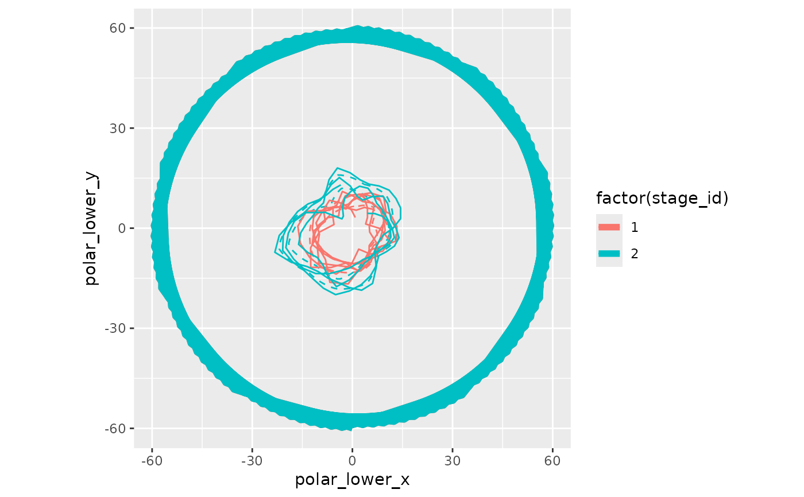

Manipulate Cartesian data to use in the WATS polar plot
Source:R/polarize-cartesian.R
polarize_cartesian.RdThree operations are performed. First, within each stage, the first row is repeated at the end, to close the loop. Second, multiple points are interpolated (still in a Cartesian coordinates) so that the polar graph doesn't have sharp edges. These sharp edges would be artifacts of the conversion, and not reflect the observed data. Third, the Cartesian points are converted to polar coordinates.
Usage
polarize_cartesian(
ds_linear,
ds_stage_cycle,
y_name,
stage_id_name,
cycle_tally_name = "cycle_tally",
proportion_through_cycle_name = "proportion_through_cycle",
periodic_lower_name = "position_lower",
periodic_center_name = "position_center",
periodic_upper_name = "position_upper",
plotted_point_count_per_cycle = 120,
graph_floor = min(base::pretty(ds_linear[[y_name]]))
)Arguments
- ds_linear
The data.frame to containing the simple linear data. There should be one record per observation.
- ds_stage_cycle
The data.frame to containing the reoccurring/periodic bands. There should be one record per observation per stage. If there are three stages, this tibble::tibble should have three times as many rows as
ds_linear.- y_name
The variable name containing the dependent/criterion variable.
- stage_id_name
The variable name indicating which stage the record belongs to. For example, before the first interruption, the
stage_idis "1", and is "2" afterwards.- cycle_tally_name
The variable name indicating how many complete cycles have occurred at that observation.
- proportion_through_cycle_name
The variable name showing how far through a cycle the observation (or summarized observations) occurred.
- periodic_lower_name
The variable name showing the lower bound of a stage's periodic estimate.
- periodic_center_name
The variable name showing the center estimate of a stage's periodic estimate.
- periodic_upper_name
The variable name showing the upper bound of a stage's periodic estimate.
- plotted_point_count_per_cycle
The number of points that are plotted per cycle. If the polar graph has 'sharp corners', then increase this value.
- graph_floor
The value of the criterion/dependent variable at the center of the polar plot.
Value
Returns a tibble::tibble.
Examples
library(Wats)
ds_linear <-
Wats::county_month_birth_rate_2005_version |>
dplyr::filter(county_name == "oklahoma") |>
augment_year_data_with_month_resolution(date_name = "date")
h_spread <- function(scores) { quantile(x = scores, probs = c(.25, .75)) }
portfolio <- annotate_data(
ds_linear = ds_linear,
dv_name = "birth_rate",
center_function = median,
spread_function = h_spread
)
rm(ds_linear)
polarized <- polarize_cartesian(
ds_linear = portfolio$ds_linear,
ds_stage_cycle = portfolio$ds_stage_cycle,
y_name = "birth_rate",
stage_id_name = "stage_id"
)
library(ggplot2)
polarized$ds_stage_cycle_polar |>
ggplot(aes(color = factor(stage_id))) +
geom_path(aes(x = polar_lower_x , y = polar_lower_y), linetype = 2) +
geom_path(aes(x = polar_center_x, y = polar_center_y), linewidth = 2) +
geom_path(aes(x = polar_upper_x , y = polar_upper_y), linetype = 2) +
geom_path(aes(x = observed_x , y = observed_y), data = polarized$ds_observed_polar) +
coord_fixed(ratio = 1) +
guides(color = NULL)
